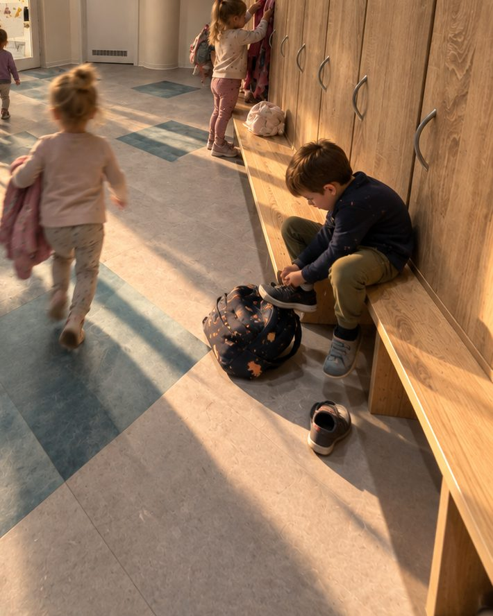
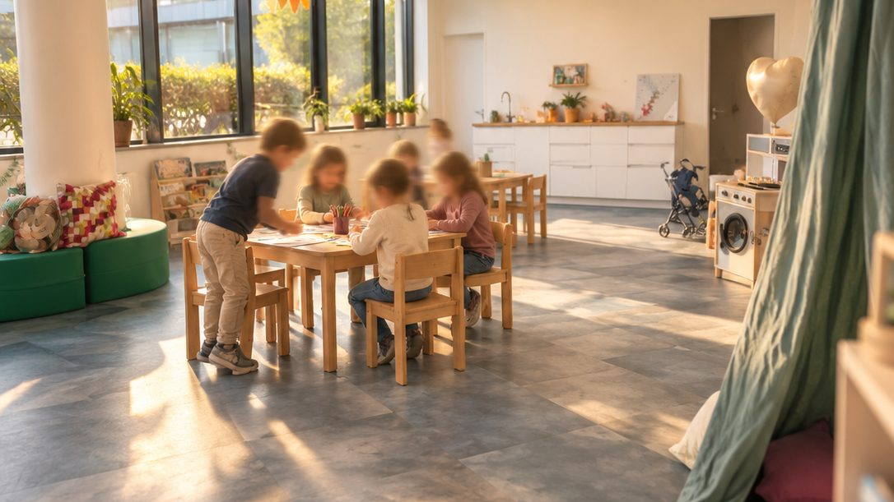
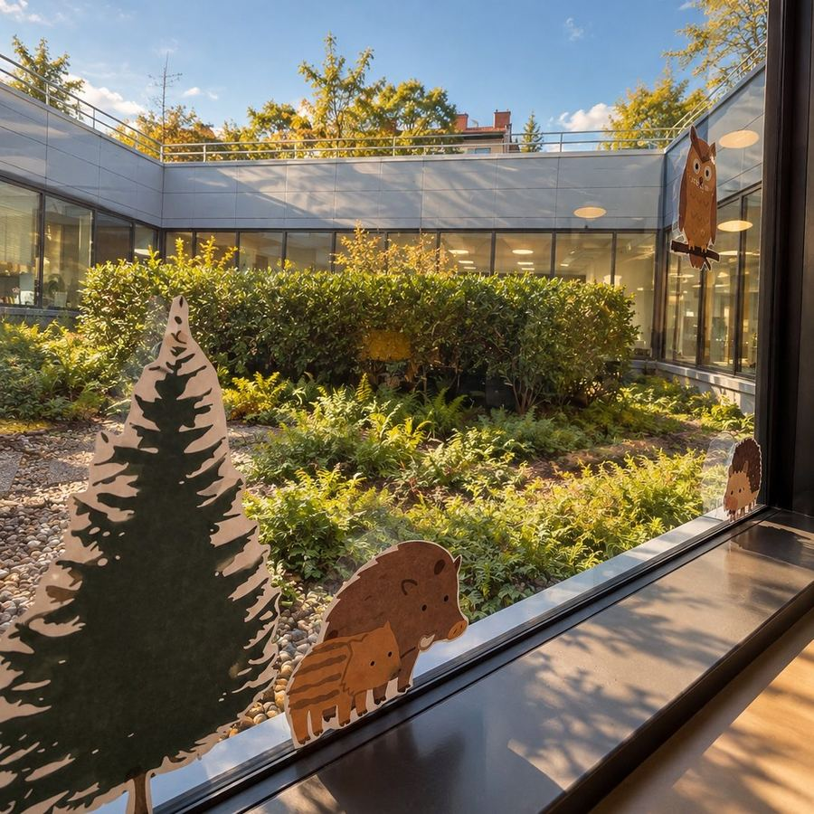

Settling in
Starting preschool at their own pace.
Starting preschool is an important life transition for both children and parents. Our goal is for each child to develop a sense of safety, trust, and confidence in the new environment naturally and without unnecessary pressure.
Parents can stay the first days
Roughly 4 weeks
At the child’s pace
Close cooperation with families

How settling in usually works
From the first meeting to rest after lunch.
That is why at Little FLOW we approach adaptation with sensitivity, individuality, and in close cooperation with families.
Every child needs their own pace
The adaptation process outlined below is only a guideline and is always adjusted to the child’s current needs.
Before starting
Getting to know each other before day one
- Children and parents have the opportunity to take part in community meetings, open days, and introductory activities before the school year begins.
- The child can gradually become familiar with the preschool environment, teachers, and future classmates.
Week 1
Getting to know each other and feeling safe
- During the first days, parents are welcome to stay in the classroom together with their child.
- We recommend shorter stays at the beginning, for example staying only until lunchtime on the first day.
- The child has the opportunity to observe the environment, join activities at their own pace, and gradually build relationships with the teachers.
- During the first days, parents can respond flexibly to their child’s needs and remain nearby if needed.
Week 2
First stays on their own
- The child gradually begins staying at the preschool independently.
- At the beginning, the length of the stay is usually shorter, for example until the morning snack or lunchtime.
- We place strong emphasis on creating a safe routine and a positive experience with separation.

Week 3
Longer stays
- The child gradually becomes comfortable staying until lunchtime.
- The child becomes more involved in the class programme, relationships with other children, and everyday activities.
- Teachers continuously monitor the child’s emotional well-being and maintain close communication with parents.
Week 4
Gradually introducing rest time
- If the child is ready, we gradually begin introducing rest time after lunch.
- Children are supported in finding a calm and comfortable way to rest.
- We respect each child’s individual needs, routines, and pace of adaptation.

What we build on
What matters to us.
- A respectful and sensitive approach
- Close communication with parents
- A safe and predictable environment
- Each child’s individual pace
- Building trust between the child, family, and teachers
Rolling admissions · limited capacity
Let’s plan the start
Let’s plan the start
together.
Write to us and we will agree how to set up the first weeks for your child. We reply within 1 working day.